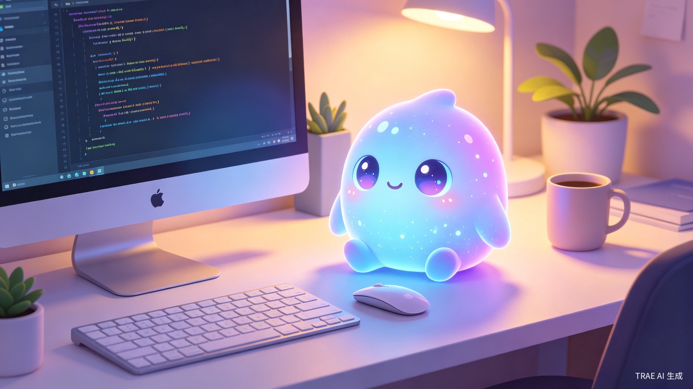
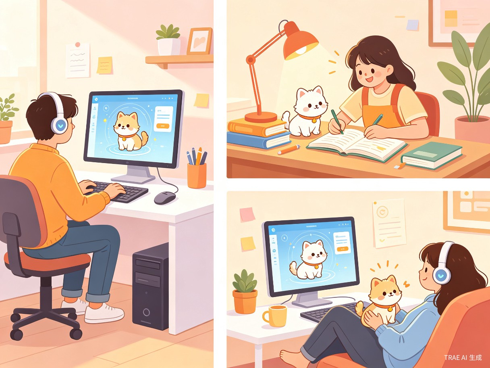
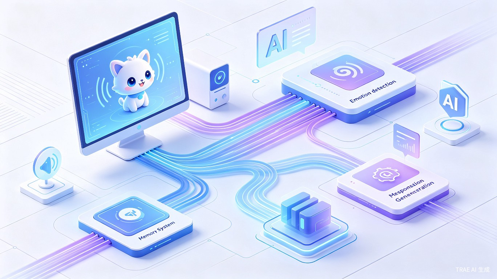

电子桌面宠物
让AI拥有可爱实体，用情感连接重塑人机交互体验
1创意概述
1.1 创意名称
电子桌面宠物（ePet） —— 一款基于AI大模型的桌面虚拟宠物软件，通过语音交互、视觉感知与情感计算，为用户提供有温度的智能陪伴体验。
1.2 想解决什么问题
当前AI对话工具虽然功能强大，但缺乏实体感和情感温度。用户与AI的交互停留在"工具-使用者"层面，难以建立真正的情感连接。我们希望通过一个可视化的桌面宠物形象，将AI从冰冷的工具转变为有性格、有情感的伙伴。
1.3 为什么会想到做这个
随着数字人技术的兴起和AI大模型的普及，我们看到了一个机会：将强大的AI能力封装进一个可爱的桌面宠物形象中。不同于数字人的"专业感"，桌面宠物更强调陪伴感和趣味性，让AI以更亲切的方式融入用户的日常工作和生活。
回顾电子宠物的发展历程——从1996年拓麻歌子（Tamagotchi）风靡全球，到QQ宠物陪伴一代中国网民，再到2025年AI桌面宠物的全面复兴[1][2]——桌面宠物始终承载着人们对数字陪伴的渴望。如今，AI大模型让这种陪伴从"预设脚本"进化到"真正理解"。
1.4 产品形态
ePet 是一款桌面端软件应用，以浮动窗口的形式常驻在用户桌面。宠物形象采用 Live2D / 精灵动画技术渲染，支持语音唤醒、语音对话、屏幕感知和情绪反馈。产品同时支持与外部硬件设备（如智能音箱、Arduino传感器模块）联动，实现"硬件交互赛道"的差异化体验。

2目标用户与痛点
2.1 目标用户画像
远程办公族
长时间独自在家办公，缺乏社交互动，需要一个不会打扰但"有人在那里"的陪伴感。
学生群体
需要学习陪伴和番茄钟管理，宠物可以在学习时安静陪伴，休息时互动娱乐。
程序员/创作者
长时间面对电脑，希望有一个有趣的桌面伙伴，能在编码疲劳时提供情绪价值。
独居青年
一人户从2010年6709万户增长到2020年1.25亿户[3]，独居人群对数字陪伴的需求日益增长。
2.2 使用场景

| 场景 | 用户行为 | 宠物响应 |
|---|---|---|
| 工作陪伴 | 用户专注编码/写作 | 宠物安静待在角落，偶尔探头偷看，不打扰 |
| 语音指令 | 用户说话"帮我查一下天气" | 宠物竖起耳朵，调用AI理解指令并执行，用可爱语音回复 |
| 情绪感知 | 用户长时间未操作，表情疲惫 | 宠物主动靠近，播放轻音乐或讲个笑话 |
| 屏幕互动 | 用户鼠标靠近宠物 | 宠物做出反应（躲闪、撒娇、跟随光标） |
| 硬件联动 | 用户拍手/挥手（传感器检测） | 宠物听到声音后转头，做出惊喜表情 |
2.3 当前痛点分析
痛点一：AI缺乏人格化形象。现有AI助手（如ChatGPT、文心一言）以对话框为主，缺乏视觉形象和情感表达，用户难以产生情感投射。
痛点二：传统桌宠缺乏智能。现有桌面宠物（如Desktop Goose、Bongo Cat）仅能执行预设动画，无法理解用户意图或进行自然对话[4]。
痛点三：AI玩具退货率高。AI玩具平均退货率35%，约为传统玩具的2.3倍[3]，核心原因是新鲜感过后难以形成真正的情感连接。ePet通过长期记忆和情感计算来解决这一问题。
3市场分析与竞品研究
3.1 市场规模
3.2 竞品对比
| 产品 | 类型 | AI能力 | 语音交互 | 长期记忆 | 硬件联动 |
|---|---|---|---|---|---|
| Desktop Goose | 软件桌宠 | 无 | 无 | 无 | 无 |
| Mac Pet | 软件桌宠 | 无 | 无 | 无 | 无 |
| AI Desktop Pet (Steam) | 软件桌宠 | 本地LLM | 有 | 有限 | 无 |
| 逗逗游戏伙伴 | 软件桌宠 | VLM+云端AI | 有 | 有 | 无 |
| LOVOT | 硬件机器人 | 有限 | 有限 | 有 | 核心 |
| Ropet | 硬件毛绒 | 小模型+云端 | 有 | 有 | 核心 |
| ePet（本方案） | 软件+硬件 | 大模型+情感计算 | 有 | 有 | 有 |
差异化优势：ePet 的核心差异化在于"软件为主、硬件为辅"的混合架构。相比纯软件桌宠，我们增加了硬件传感器交互能力；相比硬件机器人（如LOVOT售价3万+），我们的软件形态让用户零门槛入手，同时可选配硬件模块获得更丰富的交互体验。
4核心功能设计
4.1 功能架构总览
flowchart TB
subgraph 感知层
A[语音输入
麦克风] --> D[多模态感知引擎]
B[视觉输入
摄像头] --> D
C[硬件传感器
Arduino/传感器] --> D
E[屏幕状态
API Hook] --> D
end
subgraph 理解层
D --> F[语音识别 ASR]
D --> G[情感分析引擎]
D --> H[意图理解 NLU]
F --> I[大语言模型 LLM]
G --> I
H --> I
end
subgraph 记忆层
I --> J[跨模态记忆系统]
J --> K[短期记忆
当前会话]
J --> L[长期记忆
用户画像/偏好]
J --> M[场景记忆
对话+画面+声音]
end
subgraph 表达层
I --> N[语音合成 TTS]
I --> O[动画引擎
Live2D/精灵]
I --> P[行为决策
情绪状态机]
N --> Q[音频输出]
O --> R[宠物形象渲染]
P --> R
end
subgraph 执行层
I --> S[系统操作
打开应用/查天气]
I --> T[硬件控制
LED/马达/屏幕]
end
4.2 核心功能模块
智能语音交互
支持语音唤醒 + 自然语言对话。用户可以直接对宠物说话，宠物通过ASR识别语音，经大模型理解后生成回复，再通过TTS以宠物专属音色朗读。支持自定义唤醒词（如"小e小e"），语音指令可执行系统操作（打开应用、查询信息、设置提醒等）。
情感感知与共情响应
基于多模态情感计算技术[5]，通过摄像头分析用户面部表情（14种基本表情+复合情绪）、语音语调判断情绪状态，结合打字速度、操作频率等行为数据综合评估用户情绪。宠物会根据用户情绪调整自身行为——用户开心时一起庆祝，用户疲惫时安静陪伴。
跨模态长期记忆
参考"逗逗游戏伙伴"的跨模态记忆系统[6]，ePet 不仅记录对话内容，还将对话、屏幕画面、声音环境整合为"场景"进行存储。宠物能记住用户的名字、喜好、重要日期，以及上次聊天的内容，形成真正的"认识你"的感觉。
自主行为系统
宠物拥有自主情绪状态机，会根据时间、用户活跃度、自身"心情"自主做出行为——饿了会提醒喂食（虚拟），无聊了会玩弄屏幕上的元素，困了会打瞌睡。这种自主性让宠物感觉"活着"而非单纯等待指令。
硬件交互模块
通过Arduino/ESP32等硬件模块扩展交互维度：
- 声音传感器：检测拍手、呼唤等声音事件，宠物做出定向反应
- 距离传感器：检测用户是否在电脑前，离开时宠物表现"等待"行为
- 温湿度传感器：宠物根据环境温度调整动画（热了擦汗，冷了发抖）
- LED矩阵/小屏幕：外部硬件显示宠物表情，即使主屏幕关闭也能看到
- 触觉反馈：连接简单马达，宠物被"摸"时产生震动反馈
5技术方案
5.1 技术栈选型
| 模块 | 技术方案 | 说明 |
|---|---|---|
| 桌面应用框架 | Electron / Tauri | 跨平台桌面应用，支持浮动窗口、系统托盘、全局快捷键 |
| 宠物渲染引擎 | Live2D Cubism / Pixi.js | 高质量的2D角色动画，支持表情切换和物理模拟 |
| AI大模型 | 云端API + 本地小模型混合 | 端侧小模型处理简单对话，复杂任务调用云端大模型 |
| 语音识别 | Whisper / 讯飞ASR | 支持中文语音识别，低延迟 |
| 语音合成 | VITS / CosyVoice | 可定制宠物音色，支持情感语调 |
| 情感分析 | 多模态融合模型 | 视觉+语音+行为多维度情绪判断 |
| 硬件通信 | Arduino + Serial/Bluetooth | 通过串口或蓝牙与传感器模块通信 |
| 记忆存储 | SQLite + 向量数据库 | 结构化数据+语义检索，支持长期记忆管理 |
5.2 端云混合架构
采用"端侧小模型 + 云端大模型"混合架构[3]，在保证智能水平的同时兼顾响应速度和隐私保护：
- 端侧处理：日常闲聊、简单指令、情绪判断、动画控制——全部本地完成，延迟低于200ms
- 云端处理：复杂知识问答、代码生成、长文本理解——调用云端大模型API
- 智能路由：根据问题复杂度自动判断端侧/云端，用户无感知切换

5.3 硬件交互方案
flowchart LR
subgraph 桌面端 ePet应用
A[主程序] --> B[硬件通信模块]
end
subgraph 硬件模块 Arduino/ESP32
C[声音传感器] --> D[MCU]
E[距离传感器] --> D
F[温湿度传感器] --> D
G[LED矩阵] --> D
H[触觉马达] --> D
end
B <-->|Serial / BLE| D
6价值与意义
6.1 情绪价值
ePet 的核心价值在于提供持续的、低负担的情绪陪伴。不同于需要主动打开的AI聊天工具，桌面宠物以"常驻"的方式存在于用户的工作环境中，在不需要任何主动操作的情况下提供"有人在那里"的心理安全感。
产品哲学：参考LOVOT的成功经验——几乎无"有用"功能，却是留存最高的AI陪伴产品[3]。ePet 坚信"被需要感"比功能完整性更重要。宠物不需要帮用户完成复杂任务，它的价值在于让用户感到"有一个小生命在乎我"。
6.2 技术创新价值
- 情感计算落地：将前沿的多模态情感识别技术融入日常桌面场景，推动情感AI从实验室走向大众[5]
- 端云协同范式：探索大模型在轻量化桌面应用中的最优部署策略
- 软硬融合交互：软件宠物+硬件传感器的混合方案，为"硬件交互赛道"提供新的产品形态参考
- 长期记忆工程：跨模态记忆系统的工程实践，为AI个性化提供技术积累
6.3 社会意义
在独居经济快速发展的背景下[3]，数字陪伴正在成为缓解孤独感的重要手段。ePet 以低成本、低门槛的方式为用户提供情感陪伴，特别是对以下群体具有积极意义：
- 独居青年：缓解独自生活的孤独感
- 远程工作者：弥补居家办公的社交缺失
- 老年群体：未来可扩展为银发陪伴方案（如Onorato AI鹦鹉为老人定制化训练的成功案例[3]）
7实现路线
7.1 开发阶段规划
7.2 TRAE大赛适配
根据TRAE创造力大赛硬件交互赛道要求，本方案将使用TRAE Work/IDE进行全流程开发，并提供演示视频展示软件运行效果和硬件交互功能。所有代码、AI对话记录、任务历史将作为创作过程证明材料提交。
8总结
电子桌面宠物ePet 是一款融合了AI大模型、情感计算、长期记忆和硬件交互的创新桌面陪伴产品。它将强大的AI能力封装进一个可爱的虚拟宠物形象中，让用户在日常工作场景中获得有温度的智能陪伴。
我们的核心创新在于：
人格化AI
让AI从对话框变成有形象的宠物伙伴，建立情感连接。
情感计算
多模态感知用户情绪，提供共情式陪伴而非机械式回应。
软硬融合
软件宠物+硬件传感器的混合方案，拓展交互维度。
低负担陪伴
常驻桌面、不打扰、有温度，重新定义AI陪伴体验。
ePet 不仅仅是一个桌面宠物，更是对"人机关系"的一次重新思考——当AI足够聪明时，我们需要的或许不是一个更高效的工具，而是一个更温暖的伙伴。